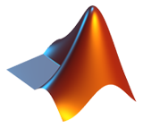
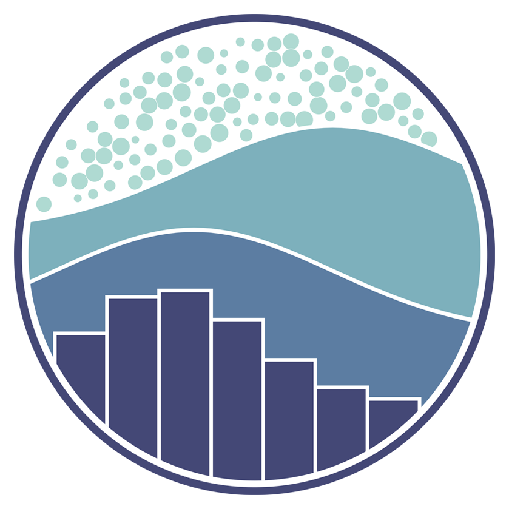

Tools Used
Python

Pandas

Matplotlib
Web-scraping (BFS)

Spyder REPL

Seaborn
Lessons Learned
• Web-scraping for data using BeautifulSoup
• Dataframe manipulation via Pandas
• Data cleaning and organization
• Graphing with Matplotlib and Seaborn
• Handling large datasets